VLČR na konferenci OpenAlt 2026
09. 11. 2026
Ve dnech 7. a 8. listopadu 2026 jsme se vydali do Brna na další ročník tradiční otevřené konference OpenAlt. Letošní ročník přilákal obrovské množství návštěvníků a náš stánek se od samého začátku těšil velké pozornosti. Přivezli jsme ukázat jak naše osvědčené projekty, tak i několik čerstvých novinek.
Středem zájmu byl náš známý efektivně fungující počítač poskládaný z dílů od popelnic. K osvědčenému tisku účtenek se nám nově podařilo zprovoznit možnost tisknout přímo z bitmapy fotografie, což si návštěvníci velmi rádi zkoušeli. Pozornost poutal také náš starý osciloskop z osmdesátých let – ukazovali jsme na něm nejen zajímavá měření signálů v praxi, ale pro pobavení na něm běžel i legenda mezi herními klasikami, hra Asteroidy. Tradičně velkému ohlasu se těšily i ukázky našich autonomních a bojových robotů.
Součástí oficiálního programu byla také odborná přednáška, ve které náš člen Robin Josef Šafařík podrobně představil projekt a vývoj miniaturního elektromagnetického rezonančního digitizéru (EMR).
Atmosféra v Brně byla po oba dva dny naprosto úžasná. Lidé byli neskutečně zvídaví, kladli skvělé dotazy a vedli s námi dlouhé odborné i neformální debaty. Na akci jsme potkali spoustu našich dlouholetých přátel a známých z komunity, ale zároveň jsme navázali řadu nových kontaktů s nadšenci, kteří sdílejí stejnou vášeň pro otvírání technologií a tvorbu vlastních projektů.
Všem návštěvníkům děkujeme za skvělé přijetí a organizátorům OpenAltu za vynikající akci!
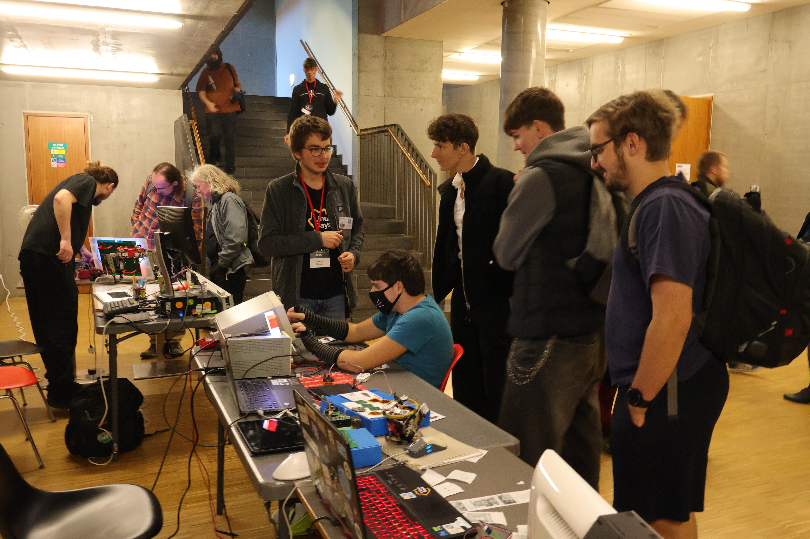
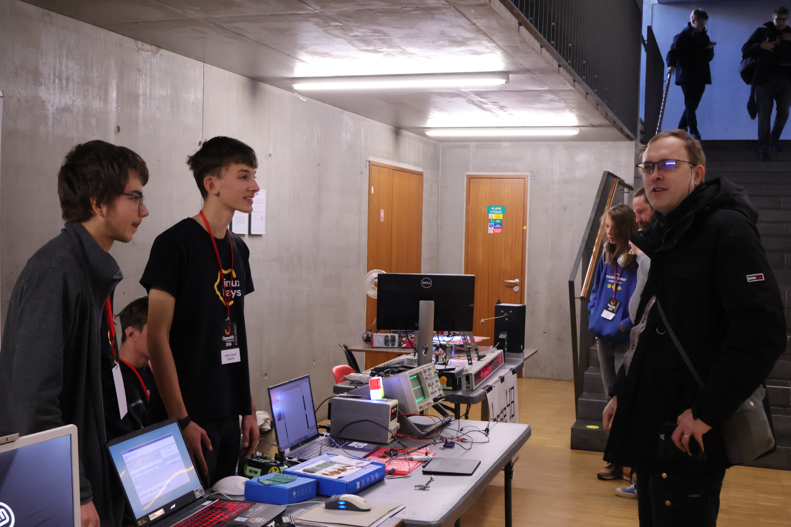
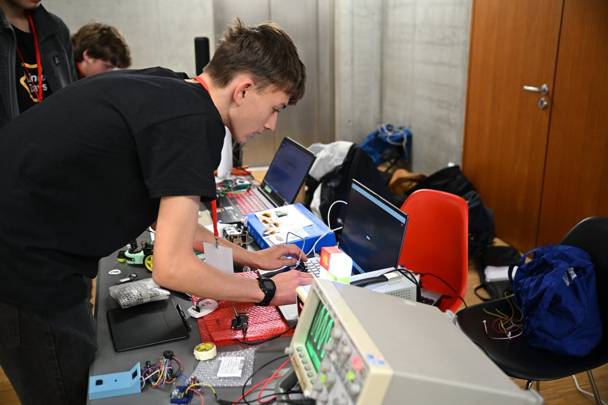
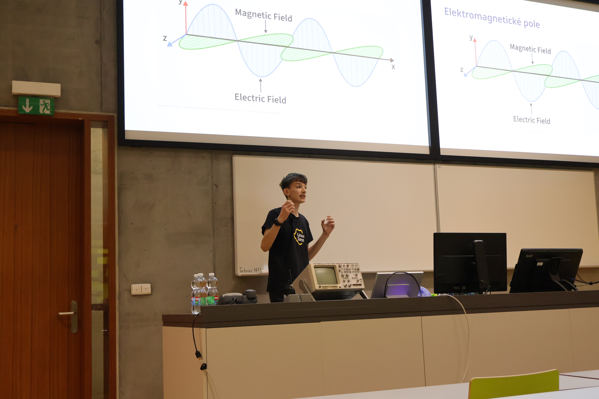
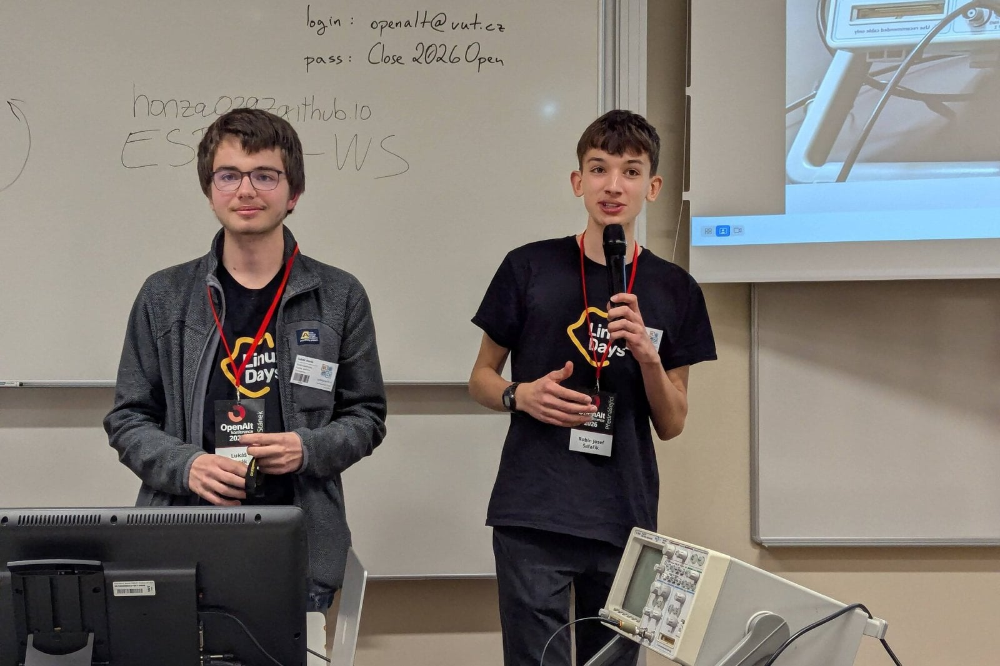
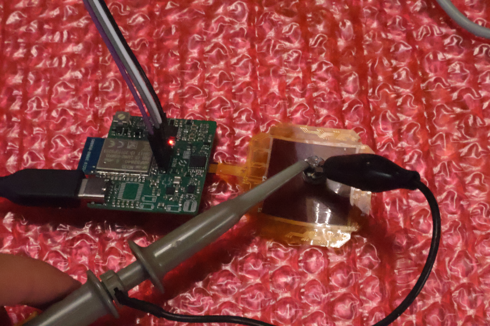
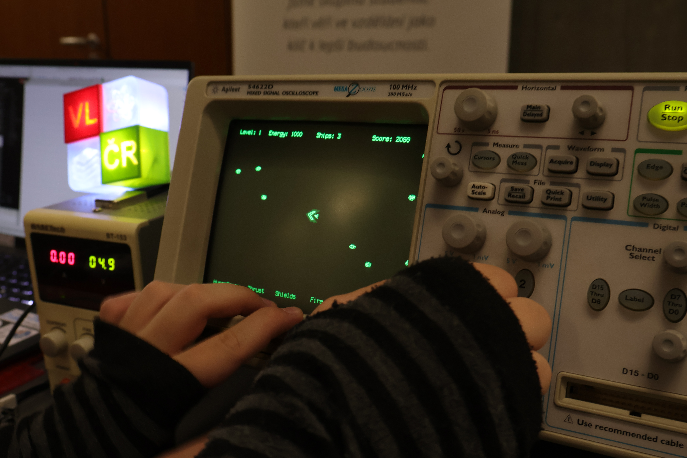
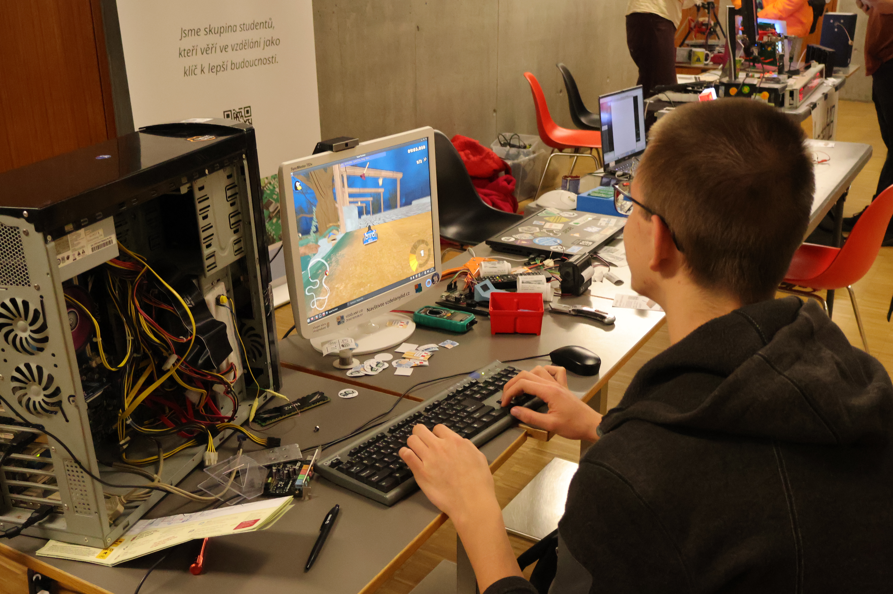
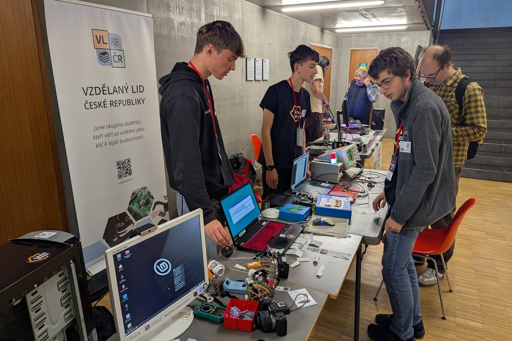
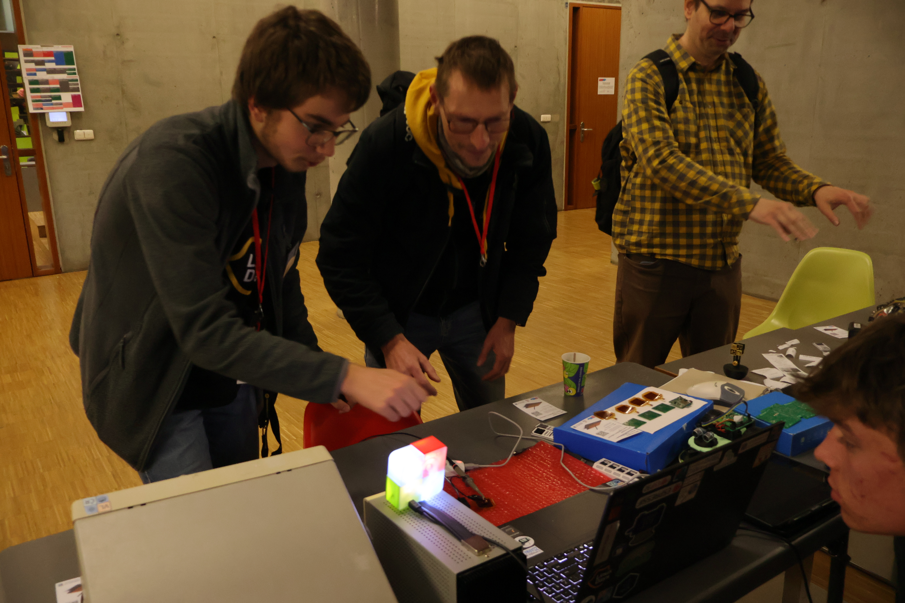
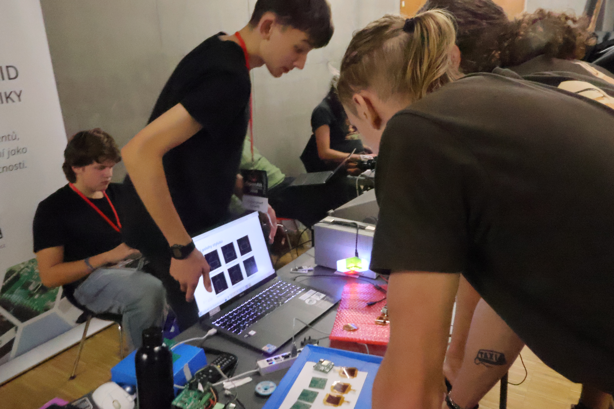
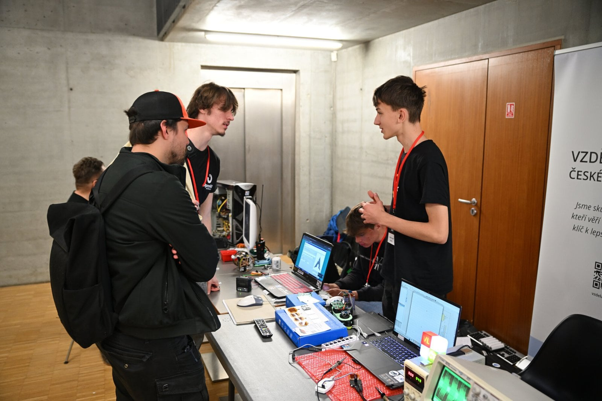
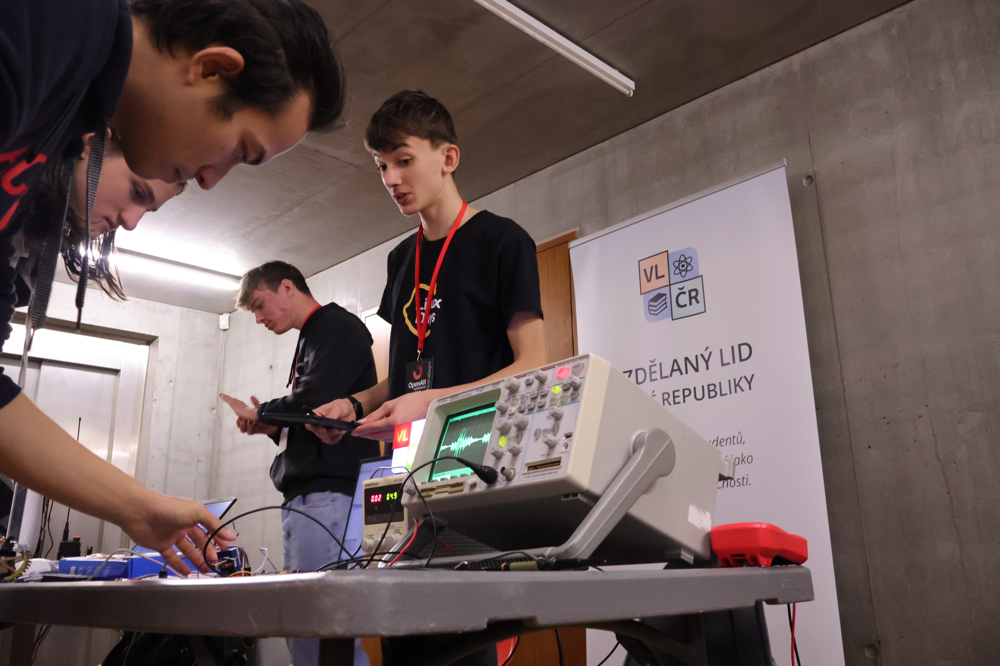
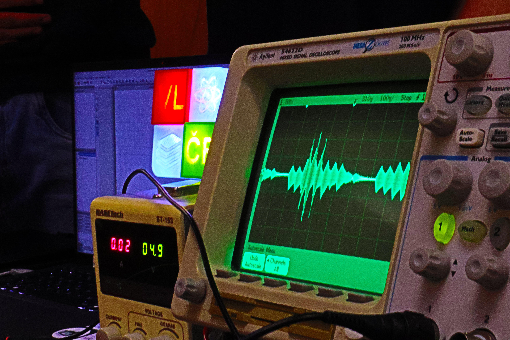
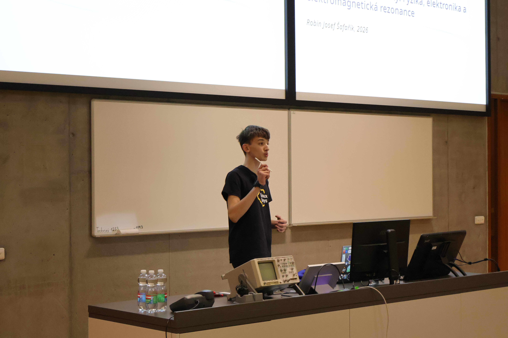